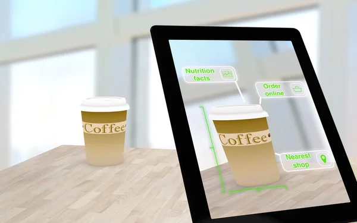

Quick tutorials
Warframe is a fantastic free to play game that has a lot of depth to it, however that depth tends to scare away a lot of new players. This video will talk you through what is a Warframe? What beginner warframe should you pick? It'll teach you how to build new weapons, how to farm resources, how to progress the story, what beginner gear you should build, how to spend credits. It'll explain the basics of the market, foundry, and mod system and more. Please also understand this video is not meant to be super in-depth, rather an introduction to help new players get into Warframe.

Things to do early on:
Spend Starting Plat on Weapon/Warframe Slots.
Redeem promo codes OLDFRIEND and FREESWORD for some free stuff.
Redeem the free booster from humble bundle.
Focus on clearing the star chart and junctions.
Level everything you get to 30 once for the mastery XP, then sell if you dont like it. Mastery Rank is required for good weapons later on.
Mods > Item level, MODS make the weapon, not the level. Level just lets you add more MODS.
Join a Clan to access Clan Tech Weapons/Warframes.
Watch iFlynn's Warframe Beginner's Guide
Read the players handbook.

The Star Chart is the interface used to access missions through the "Navigation" segment in the Orbiter. It shows the celestial bodies of the Solar System (also referred to as the Origin System). Each celestial body (also referred to as "planet") has its own set of resources and a backstory regarding the faction that is controlling the planet (accessed through Cephalon Fragments). Some planets may feature more than one faction at the same time.
Full tutorial
AR står för augmented reality. AR kan beskrivas som kombination av verkligheten och ett lager av visuella data. Den stora behållningen med AR är att allt sker i realtid och sinnesintrycken kommer från verkliga och digitala källor samtidigt.

Idag används AR framförallt inom produktion och byggsektorn. Det kan till exempel vara när nya kollegor ska läras upp eller saknar kompetens om hur en viss maskin ska skötas. Då kan en novis ta på sig ett par AR-glasögon och via dem kan en expert, som sitter på annan ort, rita upp och visa var på skärmen som nybörjaren ska trycka och information dyker upp i glasögonen och projiceras på verkligheten. AR kan även används om läget blir kritiskt, till exempel om någon maskin havererar och man måste ha experthjälp som inte finns på plats. På det sättet kan AR bespara företag och organisationer miljontals med kronor.
Hur fungerar Augmented Reality? Det finns ett flertal olika ramverk och program som kan användas för att ta fram en AR-applikation. När AR-applikationen startas kommer den att leta efter en markör, en yta eller en annan referens för att presentera datan. Datan kan exempelvis vara text, bild, video eller ett 3D-objekt.